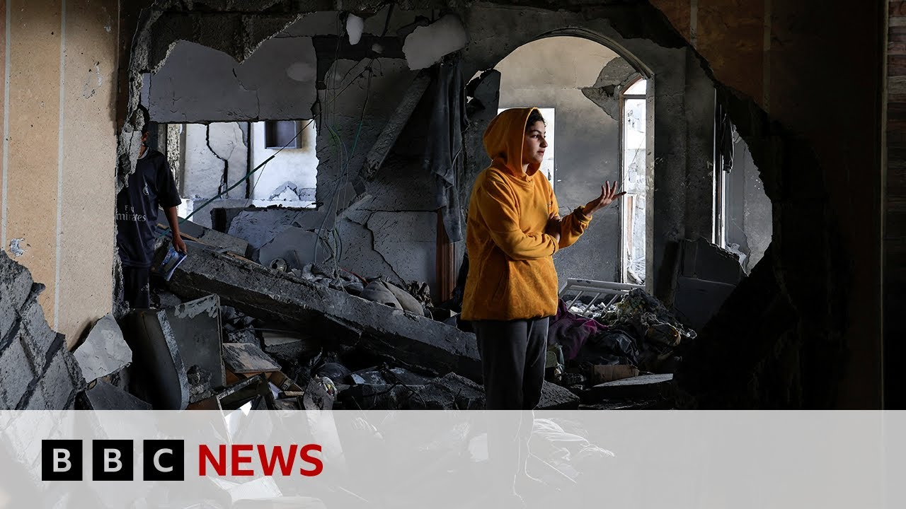

【以色列空袭加沙，一夜造成至少62人死亡 | BBC新闻】
Summary: At least 26 Palestinians were killed in Israeli strikes on Khan Younis, with over 100 deaths in recent days, mainly in Jabalia refugee camp. Israel issued evacuation orders but restricts media access. Evacuated children arrived in Jordan for treatment, while Gaza faces severe shortages and hospital bombings.
摘要： 至少26名巴勒斯坦人在以色列对汗尤尼斯的空袭中丧生，近日死亡人数超100人，主要发生在贾巴利亚难民营。以色列发布疏散令但限制媒体进入。撤离的儿童抵达约旦接受治疗，加沙面临物资短缺和医院遭袭。

⏱️ Estimated Reading Time: 8 min
At least 26 Palestinians have been killed in Israeli air strikes on the southern city of Khan Younis as their bombardment of the territory continues.
至少26名巴勒斯坦人在以色列对南部城市汗尤尼斯的空袭中丧生，以军对该地区的轰炸仍在继续。
Over a 100 Palestinians thought to have been killed in recent days as the heaviest strikes have been focused on the Jabalia refugee camp in the north of Gaza.
近日已有超100名巴勒斯坦人遇难，最猛烈的空袭集中在加沙北部的贾巴利亚难民营。
The Israeli military said they had issued evacuation orders ahead of the attacks.
以色列军方表示，他们在袭击前已发布疏散令。
Well, Israel doesn't allow independent access to Gaza for international journalists for media organizations, including the BBC.
以色列不允许包括BBC在内的国际媒体记者独立进入加沙。
The latest group of children who've been evacuated for medical treatment have arrived in Jordan.
最新一批撤离接受治疗的儿童已抵达约旦。
Four children and 12 parents flew to the capital from where our special correspondent Fogle Keen sent this report and a warning.
4名儿童和12名家长飞抵首都，本台特派记者弗格尔·基恩从当地发回报道和警告。
This report contains upsetting images.
本报道包含令人不安的画面。
In the late evening light, a journey into the skies.
暮色中，一段飞向天空的旅程。
For those who've known, only the shrinking ground of Gaza for the last 19 months.
对这些19个月来只见过加沙日益缩小的土地的人来说。
Sama 9 years old with a brain tumor.
9岁的萨玛患有脑瘤。
What's it like in Gaza?
加沙现在什么样？
Horrible.
太可怕了。
No words can describe how much horrible it is.
无法用语言形容有多可怕。
Like on all levels, this is A happy moment for these children and their parents.
但对这些孩子和父母来说，此刻是幸福的。
They traveled all day.
他们奔波了一整天。
They've come from a place of hunger and death.
他们来自充满饥饿和死亡的地方。
Now, this helicopter is going to take them to a man where they'll get the best possible cancer treatment.
现在这架直升机将带他们去安曼接受最好的癌症治疗。
Safala with her son Yousef heading for treatment.
萨法拉带着儿子优素福前往治疗。
She wanted me to read a message.
她想让我读一条消息。
It is hard to imagine what these sites mean to eyes that have looked only on desolation.
很难想象这些景象对看惯荒芜的眼睛意味着什么。
In the place they left, this carnage left by a different aircraft, a hospital bombed by Israel, the CCTV camera capturing the moment of impact and aftermath.
在他们离开的地方，另一架飞机留下的屠杀——被以色列轰炸的医院，监控摄像头拍下爆炸瞬间和后果。
Absolutely massive strike on EGH hospital.
对欧洲加沙医院的巨大空袭。
This is right in front of the emergency room.
就在急诊室正前方。
The Israelis alleged the leader of Hamas was hiding in a bunker under the hospital.
以色列声称哈马斯领导人藏身医院地堡。
28 people were killed, dozens wounded.
28人死亡，数十人受伤。
So standing outside the operating theater, you can see the damage behind me.
站在手术室外，能看到我身后的损毁。
Uh it's not even possible to take any cases to theater cuz it's uh too dangerous.
现在甚至无法进行手术，太危险了。
[Music] and a man the families who've escaped for now the horror of what's happening in Gaza.
[音乐] 这些暂时逃离加沙恐怖的家庭。
It is new and strange here but they will meet other Gazan evacuees who've already come like Habiba Alaskari who was brought to Jordan in January with gang green in two of her arms and a leg.
这里陌生而新奇，但他们将遇见其他加沙撤离者，如1月因双臂和一条腿患坏疽被送到约旦的哈比芭·阿拉斯卡里。
on the chopper to a mam I saw a child frightened and seriously ill.
在飞往安曼的直升机上，我看到一个惊恐的重病孩子。
This is Habiba today, a triple amputee.
这是如今的哈比芭，三重截肢者。
Doctors could not save her limbs, but she's a determined child and adapting.
医生没能保住她的肢体，但她是个坚强的孩子，正在适应。
Her mom Rana wants her someday to go home.
母亲拉娜希望她有朝一日能回家。
To me, Gaza will always be beautiful.
对我来说，加沙永远美丽。
The most beautiful place on this earth, says Rana.
"是地球上最美的地方"，拉娜说。
But home to war or peace, nobody knows Fergle Keane, BBC News.
但家园将迎战争还是和平，无人知晓。BBC新闻，弗格尔·基恩报道。
A man, let's go live now to Jerusalem.
现在连线耶路撒冷的记者。
Our correspondent, Yoland Nell, is there.
本台记者约兰德·内尔在现场。
Yoland, can we start with the strikes overnight?
约兰德，先从昨夜空袭说起？
What more do we know?
最新情况如何？
Well, we've been hearing from the Palestinian Red Cresant that at least 36 bodies were taken to hospitals in the south of the Gaza Strip.
巴勒斯坦红新月会称加沙南部医院接收至少36具遗体。
That's where there've been the most intense strikes um in and around Kanunas overnight.
昨夜最猛烈空袭发生在汗尤尼斯及周边。
Um we're also hearing that there were five killed um in Jabalia in the north of the strip, that three bodies were retrieved from a house in Gaza City as well.
另据报道北部贾巴利亚5人死亡，加沙城一房屋发现3具遗体。
Um but really um we're told something like nine uh Israeli strikes um have been reported in the Kan Ununas area and NASA hospital um the main hospital there has been just overwhelmed.
据悉汗尤尼斯地区遭9次以军空袭，当地主要医院纳斯尔医院已不堪重负。
The corridors now crowded um with casualties.
走廊挤满伤员。
this with a real severe shortage of course of medical supplies um and and medicines and at the same time the morg there is full local journalists are saying we've not heard from the Israeli military specifically what it was targeting but in general it's been saying that in recent days with the intense bombardment we've seen of Gaza this week it's going after Hamas including Hamas figures and uh what it calls terrorist infrastructure.
当地记者称医疗物资严重短缺，停尸房已满。以军未说明具体目标，但表示近期空袭针对哈马斯人员及所谓"恐怖基础设施"。
Yeah.
是的。
Yolan, just briefly remind us what is this latest phase?
约兰，简要说明当前阶段目标？
What have the Israelis set out as their objectives with these strikes?
以军空袭目标是什么？
I mean, these strikes have been taking place this week as President Trump has been continuing his visit to the region.
空袭正值特朗普总统访问该地区。
Um, and also um as we've got uh ceasefire and hostage release talks taking place uh once again in Doha, the Israeli government has said that any talks that take place now will take place under fire.
同时多哈正进行停火和人质释放谈判，以政府称当前谈判将在炮火下进行。
Um, in terms of Israel's military objectives, there's been a lot of reporting in the Israeli media that the head of the um, Hamas uh, military wing, Muhammad Sinoir, the younger brother of the assassinated leader of Hamas, Yakya Sinoir, um, was killed in a strike on the Gaza European Hospital, a particularly deadly strike there earlier this week.
以媒广泛报道哈马斯军事领导人穆罕默德·辛瓦尔（遇刺领袖之弟）在本周欧洲加沙医院空袭中丧生。
There's been no confirmation of that from Hamas or from the Israeli military.
哈马斯和以军均未证实。
We've also had Israel putting out uh new evacuation orders for parts of Gaza City that have caused a lot of panic.
以军对加沙城部分区域发布新疏散令引发恐慌。
They affect an area where thousands of people are staying.
涉及数千人居住区。
Uh they affect the Shifer hospital, the Islamic University which is being used as a shelter and schools being used as shelters for displaced people as well.
包括希法医院、作为避难所的伊斯兰大学及收容流离失所者的学校。
Uh in the western part of Gaza City, that's become crowded with people who've moved there from the east to flee from Israel's military offensives there.
加沙城西部挤满为躲避东部军事行动迁来的民众。
And the Israeli military put out a statement saying that it had intelligence about seven um figures from Hamas and Islamic Jihad.
以军称掌握哈马斯和杰哈德7名人员情报。
Senior figures it says uh were operating um in that area and telling people really that they should leave.
称高级成员在该区域活动，敦促平民为安全撤离。
Civilians should leave for their own safety.
平民应为自身安全离开。
Yoland, thank you for that.
约兰德，谢谢报道。